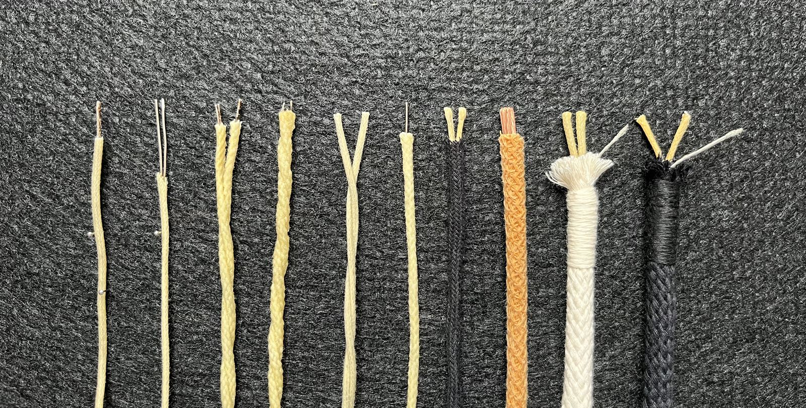
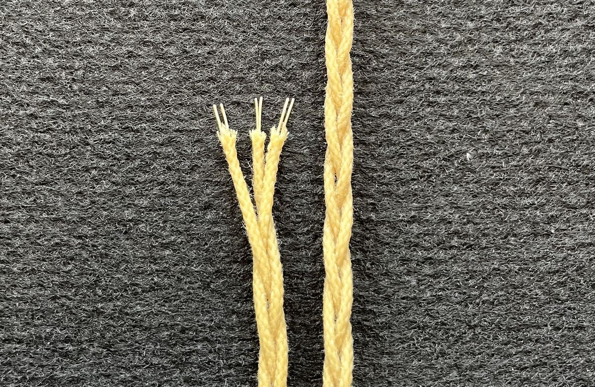

Hvad tilbyder vi?
Faste opbygninger, ikke faste produkter.
De fleste af vores kabler er lavet på bestilling efter kundens ønsker og behov, så vi har som udgangspunkt ikke faste produkter. I stedet arbejder vi ud fra nogle faste opbygninger og geometrier.
Vi bruger generelt en ledertykkelse på 0,7 mm 99,99% udglødet finsølv, da vi har erfaret at lydkvalitet, stabilitet og smidighed her går op i en højere enhed. Vi kan selvfølgelig tilbyde opbygninger i alt fra 0,1 mm og helt op til 2 mm tråd, i både kobber, sølv, forsølvet kobber, forgyldt kobber og ikke mindst forgyldt sølv.
Eksempler på nogle af vores opbygninger og inderledere.

1 2 3 4 5 6 7 8 9 10Broberg
En lille specialitet, som vi har haft stor succes med, er denne opbygning vi kalder “Broberg”. Navnet er en hyldest til en af de største ildsjæle, vi har på den danske DIY-scene. Det er fortjent, ven.
